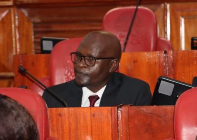

Remarks by Leader of Delegation- Commissioner Dr. Wamalwa on Persons with Disabilities Bill, 2023

Commissioner Dr. Dennis Wamalwa led a delegation on 18th April 2023 to make oral submissions before the Senate Committee on Labour and Social Welfare regarding the Persons with Disabilities Bill, 2023. Here are some highlights of his remarks:
Introduction
Commissioner Wamalwa began by thanking the committee for inviting the delegation to make submissions on the Persons with Disabilities Bill, which is core to their mandate as a Commission.
Team Introduction 
The commissioner was joined by his technical team, led by the Director of Research, Advocacy, and Outreach Directorate. He allowed the team to introduce themselves to the committee.
Protracted Process of Review
The process of review of the Persons with Disabilities Bill has been protracted, and as a Commission and partners, they have made several submissions. In November 2020, they made both written and oral submissions before the same committee on the then Persons with Disabilities (Amendment) Bill, 2020. In their submissions, they noted that the proposed amendment Bill was insufficient, and a complete overhaul of the Act was needed to comply fully with the provisions of the Constitution and the CRPD.
Two Parallel Processes
The commission advised that the two parallel processes towards amending the Persons with Disabilities Act 2003 spearheaded by the Ministry of Labour and Social Protection and the Senate be merged for purposes of maximising engagements by all stakeholders and building consensus among all stakeholders for a comprehensive progressive legislation for the country.
Happy with the Progress Made
The commission is happy with the progress made through this Bill, the amendment to the Mental Health (Amendment) Act 2022, and through the recent Statute Law Miscellaneous Amendment Bill currently before the National Assembly, which seeks to delete some of the derogatory provisions in criminal justice laws.
Compliance with Obligations Arising from Regional and International Human Rights Treaties
As a State organ designated to ensure compliance with obligations arising from regional and international human rights treaties such as the Convention on the Rights of Persons with Disabilities (CRPD), the commission is proud to see the country take a positive leap of amending this law.
Overdue Amendment
The amendment to the 2003 Act has been long overdue. In the last review for Kenya in 2015, the Committee expressed concern at the delay in the amendment of the Persons with Disabilities Act 2003 and recommended that it be reviewed to bring it into conformity with the provisions of the CRPD and the human rights-based approach to disability.
Harmonization of the Legal Framework
Of course, harmony across the entire legal framework will be an important issue for the House to consider. With these developments, as the country prepares to submit its now overdue report under the CRPD, these are some of the gains towards compliance that they shall be reporting at the UN level.
Ratification of the African Disability Protocol
At the regional level, the commission applauds the State in ratifying the African Disability Protocol, which Kenya ratified on 15th November 2021.
Conclusion
Commissioner Dr. Dennis Wamalwa concluded his remarks by welcoming Ann, the Director of Research, Advocacy, and Outreach Directorate, to delve into the substance of their submission. The Senate Committee on Labour and Social Welfare comprises nine members, including the Chair, Senator Julius Murgor Recha, and the Vice-Chair, Senator George Mungai Mbugua, both from the UDA party.